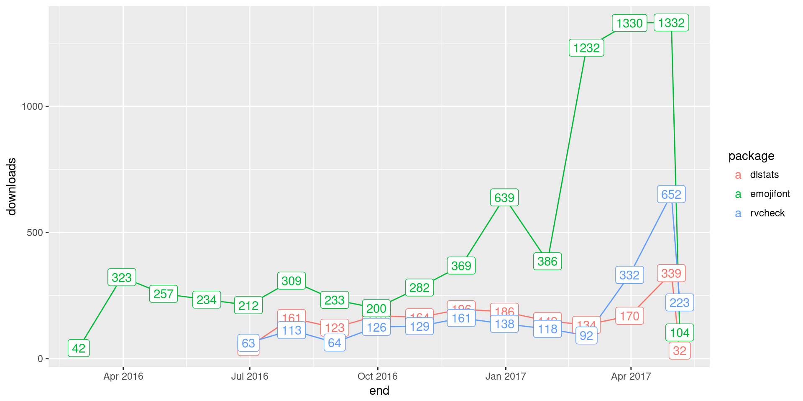
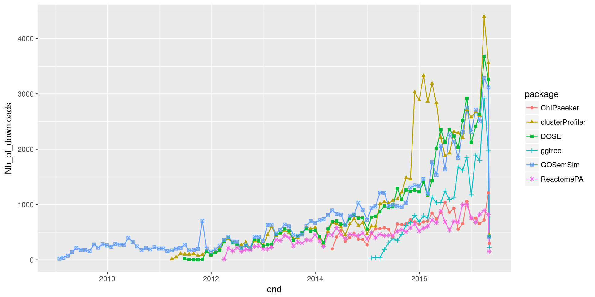
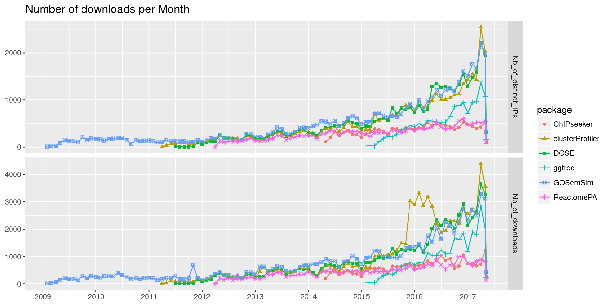

This R package queries download stats of R packages.
For CRAN packages, it queries from RStudio download logs.
For Bioconductor packages, it queries from Bioconductor download stats.
library("ggplot2")
library("dlstats")
x <- cran_stats(c("dlstats", "emojifont", "rvcheck"))
head(x)## start end downloads package
## 16 2016-06-01 2016-06-30 46 dlstats
## 19 2016-07-01 2016-07-31 161 dlstats
## 22 2016-08-01 2016-08-31 123 dlstats
## 25 2016-09-01 2016-09-30 170 dlstats
## 28 2016-10-01 2016-10-31 164 dlstats
## 31 2016-11-01 2016-11-30 196 dlstatsggplot(x, aes(end, downloads, group=package, color=package)) +
geom_line() + geom_label(aes(label=downloads))
pkgs <- c("ChIPseeker", "clusterProfiler", "DOSE", "ggtree", "GOSemSim", "ReactomePA")
y <- bioc_stats(pkgs)
head(y)## start end Nb_of_distinct_IPs Nb_of_downloads package
## 43 2014-04-01 2014-04-30 111 201 ChIPseeker
## 44 2014-05-01 2014-05-31 200 415 ChIPseeker
## 45 2014-06-01 2014-06-30 333 533 ChIPseeker
## 46 2014-07-01 2014-07-31 241 336 ChIPseeker
## 47 2014-08-01 2014-08-31 304 405 ChIPseeker
## 48 2014-09-01 2014-09-30 354 482 ChIPseekerggplot(y, aes(end, Nb_of_downloads, group=package, color=package)) +
geom_line() + geom_point(aes(shape=package))
library("tidyr")
yy <- gather(y, type, Nb, Nb_of_distinct_IPs:Nb_of_downloads)
ggplot(yy, aes(end, Nb, shape=package, color=package)) +geom_point() + geom_line() +
ylab(NULL) + xlab(NULL) + facet_grid(type~., scales="free_y") +
ggtitle("Number of downloads per Month") +
scale_x_date(date_breaks="1 year", date_labels = "%Y")